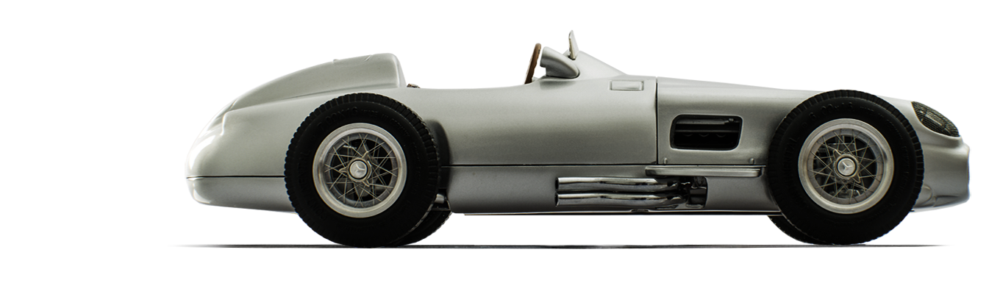
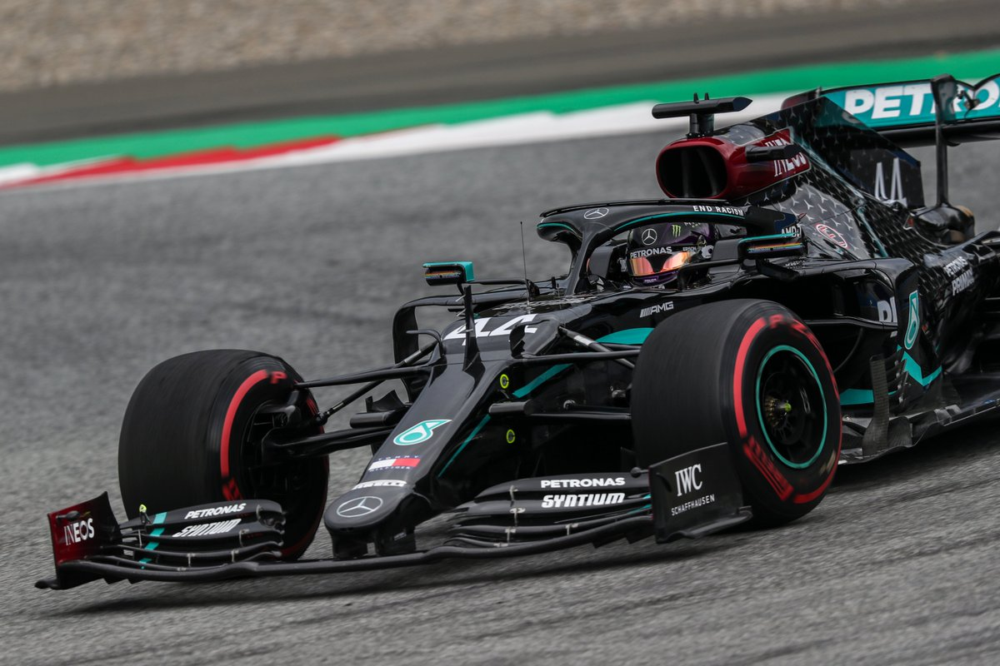

Mercedes Amg s'est fais un nom dans les legendes de la Formule 1 depuis les 2000 grace a ses nombreux titre remporté entre les titres constructeur et leur pilote qui s'arrache la place du meilleure pilote du monde. 
Source: New atlas.
Mercedes fais ces debuts en Formule 1 en 1954 mais suite a un accident grave durant les 24h du Mans (course dans laquelle des équipe de voiture participe a une course de 24 heures) l'écurie décide de se retirer de la Formule 1 en 1955. 38 ans après le retrait de l'écurie en formule 1 le goupe Mercedes Amg décide de revenir en 1993. Mercedes est une ecurie constructeur c'est a dire qu'elle produis elle meme la majeur partie des pièces utiliser tel que le chassis moteur etc... et elle est aussi une ecurie qui fourni ces moteurs par exemple elle a déja motorisé Sauber, Force india(devenue raicing point), Mc Laren ou meme brawn GP. Grace a leur ingénieur de talent Mercedes ont toujours eu l'une des meilleure voitures du plateau ou meme LA MEILLEURE VOITURE du plateau surtout dans les années 2000, mais pour que les voitures fonctionne il faut de très bon pilotes et Mercedes ont recruter les meilleurs tels que Micheal Schumacher, Lewis Hamilton, Fangio ou meme Nico Rosberg, ces pilotes font partis des légendes de la formule 1.
Source: New Atlas.